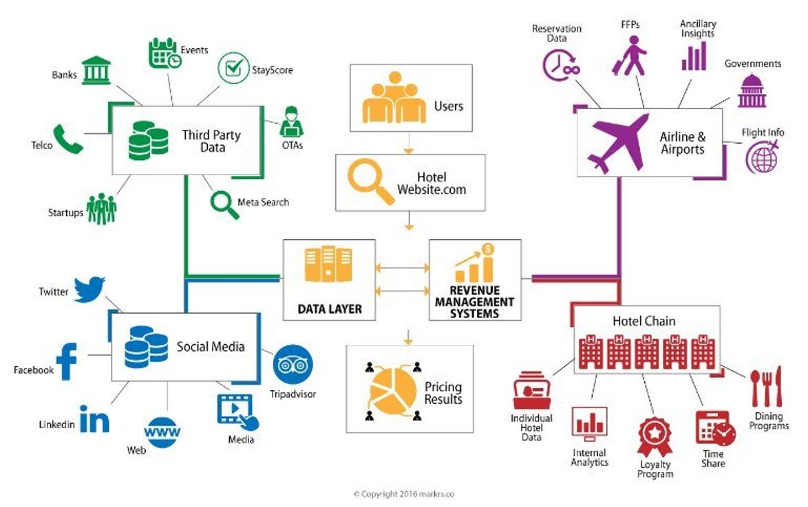

METODE PENGOLAHAN BIG DATA
Dalam melakukan pengolahan big data maka diperlukan proses data analytics, data science dan machine learning. Ketiga proses tersebut secara bersama-sama menghasilkan informasi dari big data. Berikut akan dibahas masing-masing definisi dari istilah tersebut.
Penulis

Ni Wayan Sumartini Saraswati

MENGHIMPUN BIG DATA TOURISM
Berbagai macam sumber data menyebabkan bervariasi juga cara untuk menghimpunnya. Berikut adalah macam data wisatawan dalam sebuah big data. Data demografi wisatawan dapat diperoleh dari dinas pariwisata atau BPS, namun untuk data yang lebih signifikan kita dapat memperolehnya dari media sosial.
Penulis
Ni Wayan Sumartini Saraswati

HOSPITALITY BUSINESS INTELLIGENCE SYSTEM
Hospitality Business Intelligence (BI) System mengacu kepada BI System yang diperuntukkan untuk industri hospitality. BI System merupakan sistem yang melakukan pengolahan (transformasi) data mentah menjadi informasi berharga untuk mendukung keputusan bisnis. Hospitality adalah sebuah istilah yang merujuk pada hubungan antara guest/tamu dan host/pelayanan dan juga merujuk pada aktivitas/kegiatan keramahtamahan.
Penulis
Ni Wayan Sumartini Saraswati

BUSINESS INTELLIGENCE DAN BIG DATA UNTUK HOSPITALITY
BI System merupakan sistem yang melakukan pengolahan (transformasi) data mentah menjadi informasi berharga untuk mendukung keputusan bisnis. Teknologi BI mampu menangani data terstruktur maupun tidak terstruktur dalam jumlah besar (big data). Tujuan dari BI yaitu untuk memudahkan interpretasi dari jumlah data yang besar tersebut.Penulis
Ni Wayan Sumartini Saraswati

BIG DATA ANALYTICS UNTUK PARIWISATA BUDAYA
Pariwisata berbasis budaya (Cultural Tourism) adalah pariwisata yang memanfaatkan kebudayaan sebagai daya tarik objek wisata. Di destinasi wisata tersebut, wisatawan akan merasakan dan mempelajari berbagai kebudayaan tertentu.
Penulis